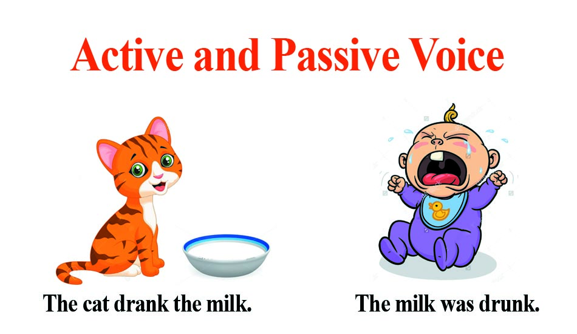

<!-- We don't need full layout here, because this page will be parsed with Ajax-->
<!-- Top Navbar-->

<div class="pages">
  <!-- Page, data-page contains page name-->
  <div data-page="about" class="page">
    <!-- Scrollable page content-->
    <div class="page-content">
      <div class="navbar">
  <div class="navbar-inner">
    <div class="left"><a href="#" class="back link"> <i class="icon icon-back"></i><span>Back</span></a></div>
    <div class="center sliding">Passive  </div>
    <div class="right">
      <!-- Right link contains only icon - additional "icon-only" class--><a href="#" class="link icon-only open-panel"> <i class="icon icon-bars"></i></a>
    </div>
  </div>
</div>
      <div class="content-block presentcon">
    
    <div class="row no-gutter">
        <div class="col-100">



        </div>
    </div>
-We use the active form to say what the subject does.
<h2>Examples</h2>

<ul>
<li>I speak English every day at work.</li>
<li>I repaired the flat tire on the car.</li>

</ul>
-We use the passive form to say what happens to people and things, to say what is done to them.
<h2>Examples</h2>
<ul>
  <li>English is spoken here.</li>
  <li>The car is being repaired.</li>
</ul>

-We use the passive form when we don't know who did the action.
<h2>Examples</h2>
<ul>
  <li>The car was damaged while it was parked on the street.</li>
  <li>The shirts were made in Turkey.</li>
</ul>
-We use the passive form when what was done is more important than who did it.
<h2>Examples</h2>
<ul>
  <li>It was approved by Gerry last week.</li>
  <li>I was informed by the Human Resources Manager only two days ago.</li>
</ul>
      </div>
    </div>
  </div>
</div>